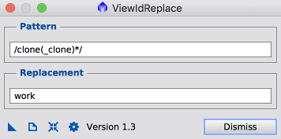
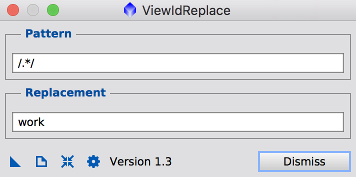
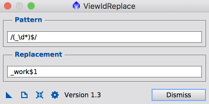

1 Description
[hide]
ViewIdReplace renames a view with some or all matches of a pattern replaced by a replacement. The pattern may be a regular expression of the form /pattern/flags or a string. The replacement is a string. A number of special replacement patterns are supported.
The script provides an alternative to manually renaming multiple views when the renaming can be expressed as a regular expression or string replacement.
Typical usage is as follows: Launch the script, specify pattern and replacement, drag an instance to the workspace, dismiss the script, drag the instance onto one or more views to rename.
Multiple instances of the script with different patterns and replacements may be created in the workspace. Drag the appropriate instance onto the view.
This document describes ViewIdReplace Version 1.4.
1.1 Example: string pattern
Replace the string "clone" with the replacement "work". Example input "integration_clone", output "integration_work".
1.2 Example: regular expression pattern
Replace the string "clone" followed by zero or more occurances of the string "_clone" with the replacement "work". Example input "integration_clone_clone", output "integration_work". Pattern * matches the preceeding parenthesized item zero or more times.
1.3 Example: append string
Append the string "_work". Example input "integration", output "integration_work". Pattern $ matches end of input.
1.4 Example: prepend string
Prepend the string "work_". Example input "integration", output "work_integration". Pattern ^ matches beginning of input.
1.5 Example: replace any
Replace any string with "work". Example input "light_012", output "work". Pattern . matches any character. Pattern * matches the preceeding item zero or more times.
1.6 Example: append string, preserve suffix
Append the string "_work" while preserving suffix underscore and digits. Example input "light_012", output "light_work_012". Pattern \d matches any digit. Pattern * matches the preceeding item zero or more times. The parenthesized item is remembered as the 1st parenthesized submatch string. Pattern $ matches end of input. The replacement pattern $1 inserts the 1st parenthesized submatch string.
2 Usage
[hide]
2.1 ViewIdReplace
2.1.1 Pattern
A regular expression or a string.
If a regular expression of the form /pattern/flags, the match or matches are replaced with the string specified by replacement parameter.
If a string, it is treated as a verbatim string. Only the first occurrence will be replaced.
An abbreviated list of pattern meanings in regular expressions.
Pattern |
Meaning |
|---|---|
. |
Matches any single character. |
\d |
Matches any digit character, equivalent to [0-9]. |
\D |
Matches any character that is not a digit, equivalent to [^0-9]. |
Pattern |
Meaning |
|---|---|
[xyz] |
A character set. Matches any one of the enclosed characters. You can specify a range of characters by using a hyphen. |
[^xyz] |
A negated or complemented character set. That is, it matches anything that is not enclosed in the brackets. You can specify a range of characters by using a hyphen. |
Pattern |
Meaning |
|---|---|
x|y |
Matches either x or y. |
Pattern |
Meaning |
|---|---|
^ |
Matches beginning of input. |
$ |
Matches end of input. |
Pattern |
Meaning |
|---|---|
(x) |
Matches x and remembers the match as a parenthesized submatch string. |
\n |
Where n is a positive integer, a back reference to the substring matching the nth parenthesized submatch string. |
(?:x) |
Matches x but does not remember the match. |
Pattern |
Meaning |
|---|---|
x* |
Matches the preceding item x 0 or more times. |
x+ |
Matches the preceding item x 1 or more times. |
x? |
Matches the preceding item x 0 or 1 time. |
x*? |
Matches the preceding item x like *, +, and ?, however the match is the smallest possible match. |
Pattern |
Meaning |
|---|---|
x(?=y) |
Matches x only if x is followed by y. |
x(?!y) |
Matches x only if x is not followed by y. |
If specified, flags can have any combination of the following values:
Flag |
Meaning |
|---|---|
g |
Global match; find all matches rather than stopping after the first match. |
i |
Ignore character case. |
2.1.2 Replacement
The string that replaces the substring specified by the pattern parameter. A number of special replacement patterns are supported:
Pattern |
Inserts |
|---|---|
$& |
Inserts the matched substring. |
$` |
Inserts the portion of the string that precedes the matched substring. |
$' |
Inserts the portion of the string that follows the matched substring. |
$n |
Where n is a positive integer, inserts the nth parenthesized submatch string, provided the pattern parameter was a regular expression. |
Replacement characters not in the set [A-Za-z0-9_] are themselves replaced with underscore.
If the output is not a unique view id, one or more digits will be appended.
2.2 Button pane
-

-
Create a new instance.
-

-
Open a browser to view documentation.
-
Reset all parameters.
-
Check the pattern for syntax errors.
-
Dismiss
-
Dismiss the dialog.
Copyright © 2012-2017 Mike Schuster. All Rights Reserved.